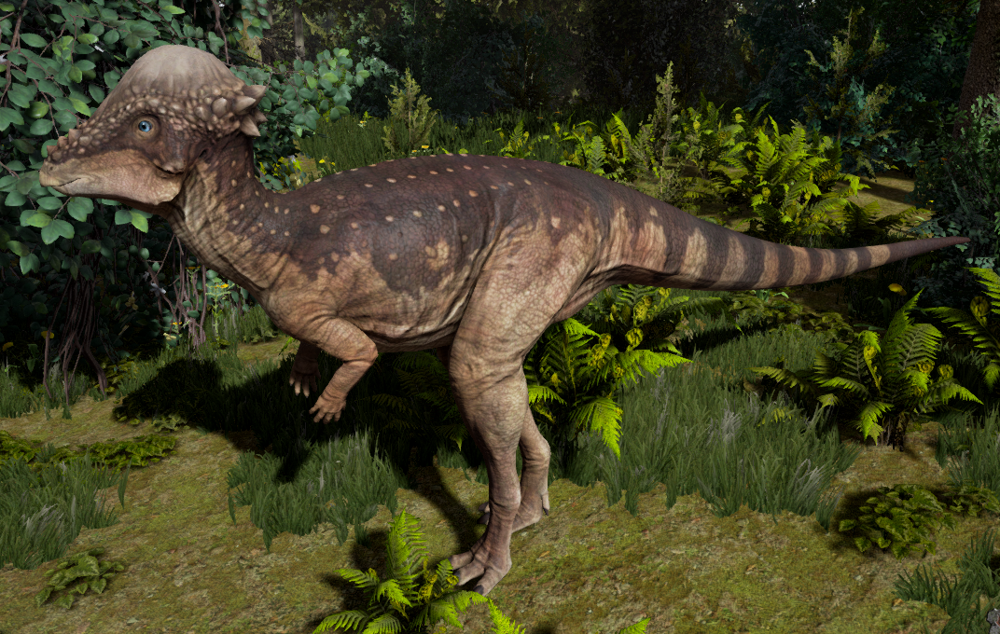

Pachycephalosaurus is a plant eating dinosaur which lived approximately 75 million
years ago during the late Cretaceous Period. It was first discovered in 1938 by William Winkley in Montana.
Since then, other fossils of this dinosaur has been found in Canada, Mongolia and Madagascar.
Pachycephalosaurus is believed to have grown to be about 15 feet long and probably weighed in
excess of 900 pounds. This dinosaur is known for its five-fingered claws, long powerful legs and
three toed clawed feet. However, what it is most known for its it thick domed skull.
This dinosaur’s skull wall could be as much as ten inches thick. This thick skull plate
was also surrounded by bony knobs. Paleontologists believe that this skull plate was used
by the dinosaurs either as a self-defense mechanism or to butt heads with other Pachycephalosaurus dinosaurs,
kind of like what big horned sheep do. However, some paleontologists believe that this couldn’t have been the case.
They posit that these dinosaur’s skulls were not heavy enough to absorb such impacts and that there haven’t been any
fossil specimens of this dinosaur that have been found with the skull damage that would likely happen during such impacts.
It is believed that this dinosaur was an herbivore and lived primarily off of plants, fruits and seeds.
It is believed that its teeth were incapable of handling some of the tougher foliage like other herbivores of the era,
so paleontologist believe that the plants it must have lived off of must have been soft. However, an interesting fact is
that it is also possible that this dinosaur lived off of insects as well.